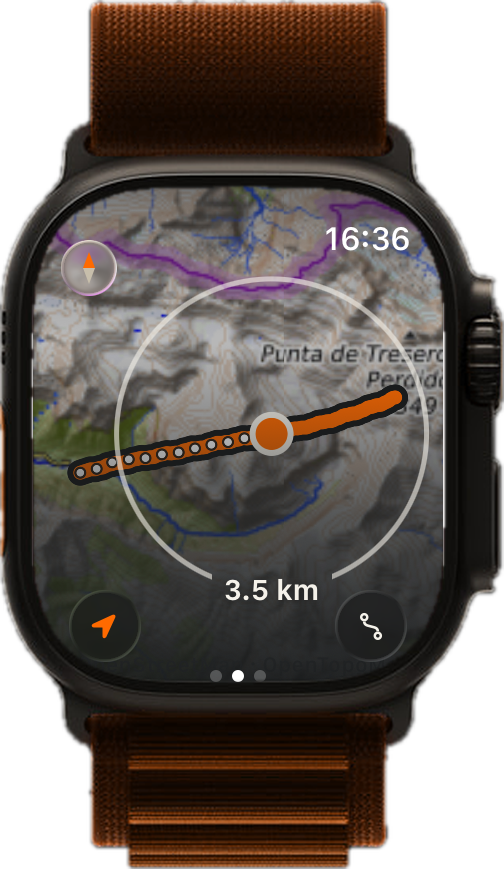
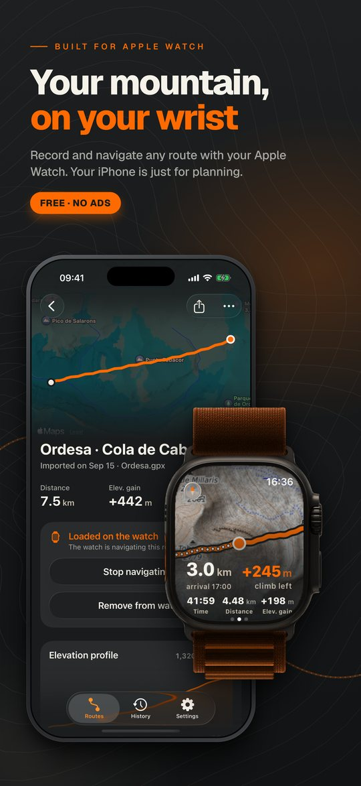
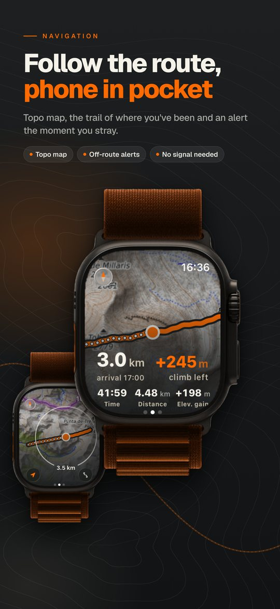
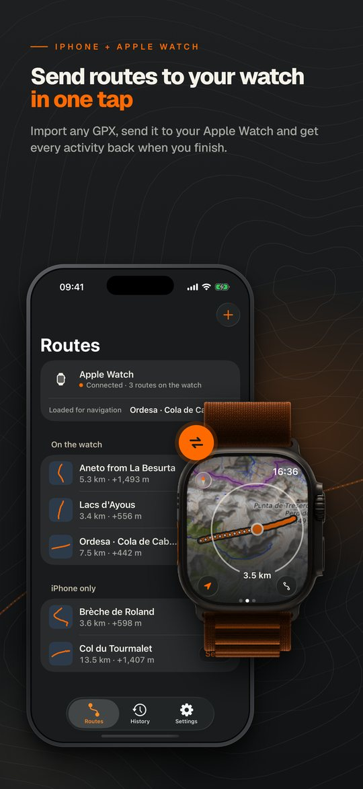
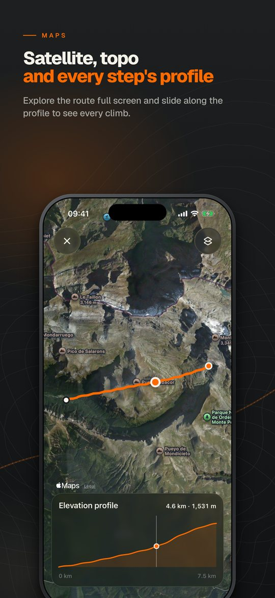
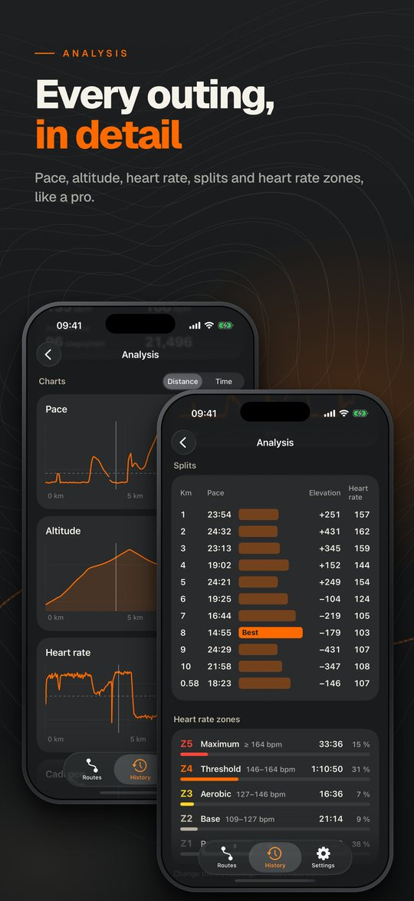
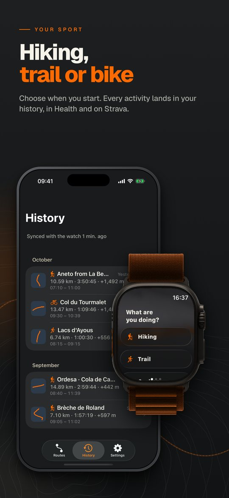
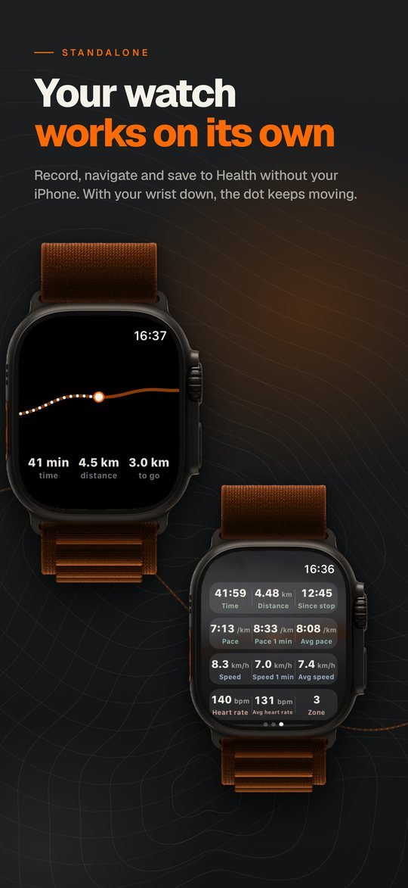
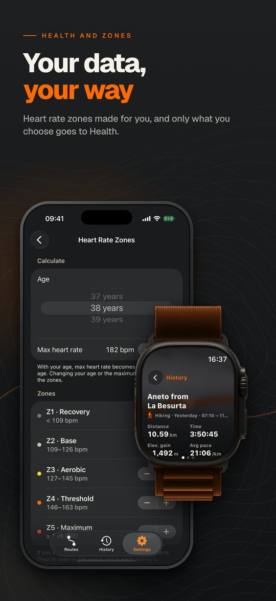

1Navigate
Topo map, the trail of where you've been and an alert the moment you stray.
3.0km · to go
Built for Apple Watch
Record and navigate any route with your Apple Watch. Your iPhone is just for planning.
Free · No ads · No subscriptions
Features
Topo map, the trail of where you've been and an alert the moment you stray.
Distance, elevation, pace and heart rate live. Hiking, trail or bike.
Send GPX routes to your watch in one tap and get every activity back when you finish.
Profile, splits, heart rate zones and best efforts for every outing.

Record, navigate and save to Health even if you leave your iPhone at home. With your wrist down, the dot keeps moving.
Screenshots








Load a route, raise your wrist and go.